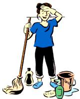

All winter long, they've been multiplying. Dust bunnies beneath your bed, behind your dresser, on top of the refrigerator. Mudencrusted mukluks and wet Wellingtons have left their dirty footprints in your foyer and down the cellar stairs. And don't even consider what's been lurking under the living room rug these few months.
After a season of hibernation, it's no wonder that when the first breath of spring arrives, we pry creaky windows open, fling back the curtains with wild abandon and swing the doors wide open to sweep out winter's accumulation of dirt and grime.
But before you break out that bucket and mop to usher in a new, fresh season, take a moment to consider what you're cleaning with. The "biodegradable," "nontoxic" product you plucked from the supermarket shelves may not be as benign as its label proclaims. The Federal Hazardous Substances Labeling Act stipulates that manufacturers must disclose active ingredients that are acutely hazardous, but inert ingredients that may produce chronic effects do not have to be labeled at all.
Many cleaning products contain chlorine, petroleum-based surfactants and distillates, formaldehyde and germicides-many of which are potent poisons. As well as being environmentally harmful especially in aquatic systems, sodium hypochlorite (bleach) is a eye and lung irritant, and can cause burns. Nitrobenzenes found in many furniture and floor polishes have been associated with cancer and birth defects. Formaldehyde a common preservative in many household products, has been classified as a probable human carcinogen by the U.S. Environmental Protection Agency.
The EPA reports that an "average" household contains anywhere from three to 25 gallons of toxic materials, most of which are cleaners. A 15-year study conducted in Oregon found a correlation between chronic exposure to cleaning products and an increased cancer rate in women who worked at home. Clearly, it's sanitary insanity to clean with products that pollute our homes, our bodies and our planet, but what's a neat freak to do?
Before you clean, go green. First, rid your home of cleaners that are toxic or that you suspect might be toxic, like those labeled "Warning," "Danger" or "Poison." Dispose of them through your local hazardous-waste collection program. Do NOT pour them down the drain or throw them into the trash.
Seek simple solutions. You don't need to purchase a different product for each cleaning task. Baking soda, distilled white vinegar, washing soda, Borax and a good liquid soap or detergent will do nicely. These cleaners are more versatile, better for you and the environment, and cost significantly less than formulated products. Annie Berthold-Bond's book, Better Basics, tells how to clean everything from tarnished silver to stained socks using natural, easy-to-find ingredients. The Environmental Media Service's Web site also offers comprehensive information and safe solutions: www.ems.org/household_cleaners/alternatives.html .
Be a consumer sleuth. If you decide to buy, try to decipher the ingredients. Be aware that buzzwords such as "natural," "biodegradable" and "nontoxic" are not regulated; they may have little purpose in the market other than to part you and your pocketbook. Your best bet for finding safer cleaning products is at the local health food store or natural foods cooperative. These organizations usually have more stringent (and environmentally ethical) buying policies.
Glass Cleaner
In a spray bottle combine vinegar with water at a 2:1 ratio or use straight vinegar. Spray on; wipe off with old newspaper. For greasy fingerprints, combine vinegar with a squirt or two of liquid vegetable-oil-based soap.
Sink Scrubber
Scrub with baking soda or Borax. Bon Ami also works scrubbing wonders. (Use care on fiberglass.)
Disinfectants
Tea tree essential oil, Borax, or vinegar.
Toilets
Pour 1 cup Borax into bowl. Let sit overnight. Scrub. Or pour 1 cup baking soda into bowl. Add 1 cup distilled white vinegar. The mix will froth and then you're ready to scrub.
Floor Cleaner
Pour 1/2 cup washing soda, 1/2 cup vinegar and 2 tablespoons liquid soap into a bucket filled with 4 galloons of hot water.
Furniture Polish
Melt 2 1/2 ounces olive oil, 1 1/2 ounces coconut oil, and 1 ounce each beeswax and carnauba wax. Add 4 ounces distilled water and blend. Rub the mixture on the furniture with a soft cotton cloth.
Dusting Solution
Combine 1/8 cup lemon juice with 1/4 teaspoon olive oil. Dip a cotton rag into the mixture and dust away.
Fabric Softener
Baking Soda.
Oven Cleaner
Spay water over the oven bottom; cover with a layer of baking soda. Let sit overnight. Wipe clean .
Information adapted from Clean & Green and Better Basicsfor the Home by Annie Berthold-Bond.
|
 EYEWIRE Soap Smarts If every U.S. household replaced its petro-based laundry detergent with a vegetable-based product, 280,000 barrels of oil would be saved - enough to heat and cool 16,000 U.S. homes for a year. (Source: Seventh Generation) |
|
|